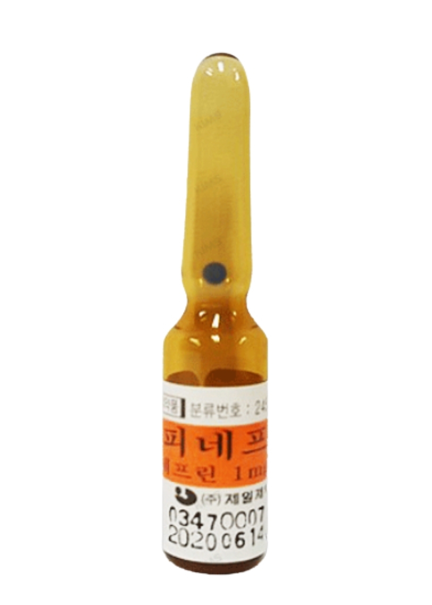
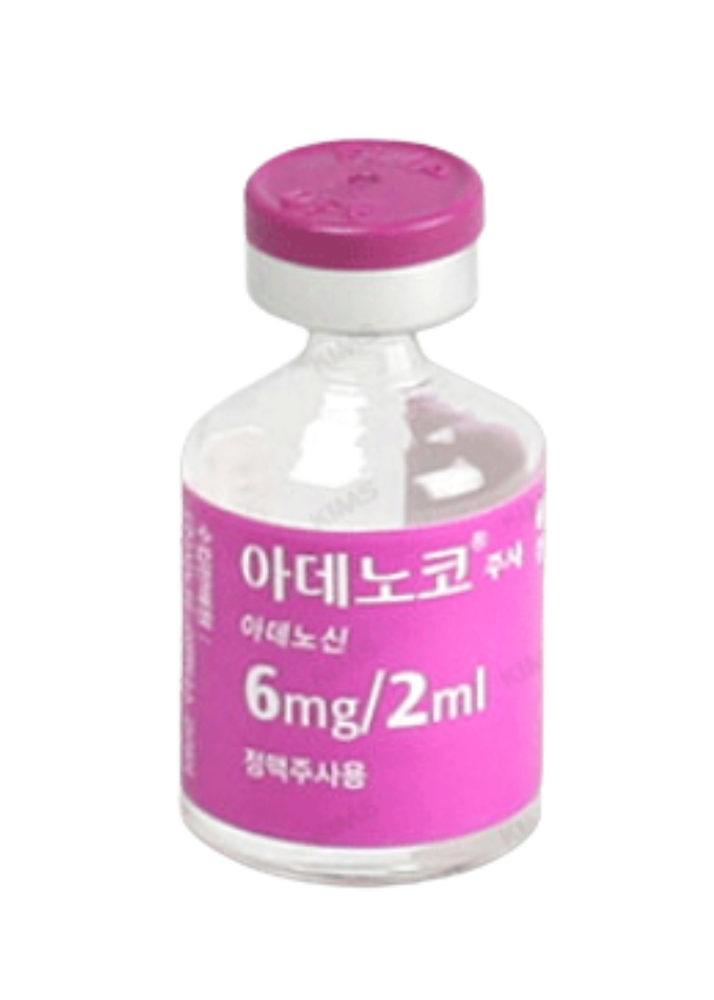
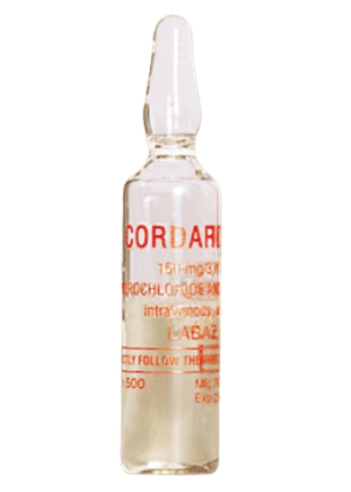
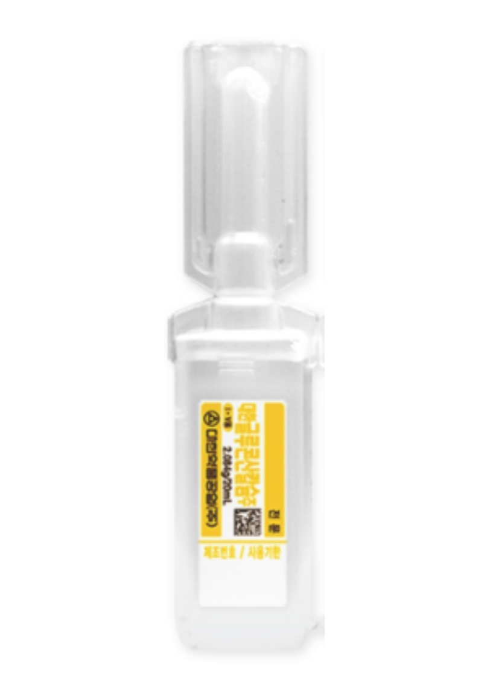
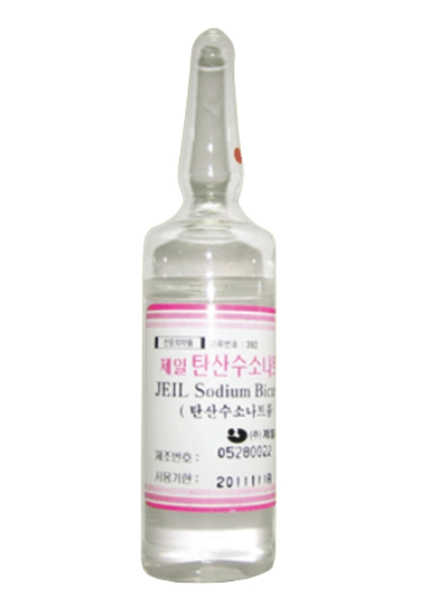
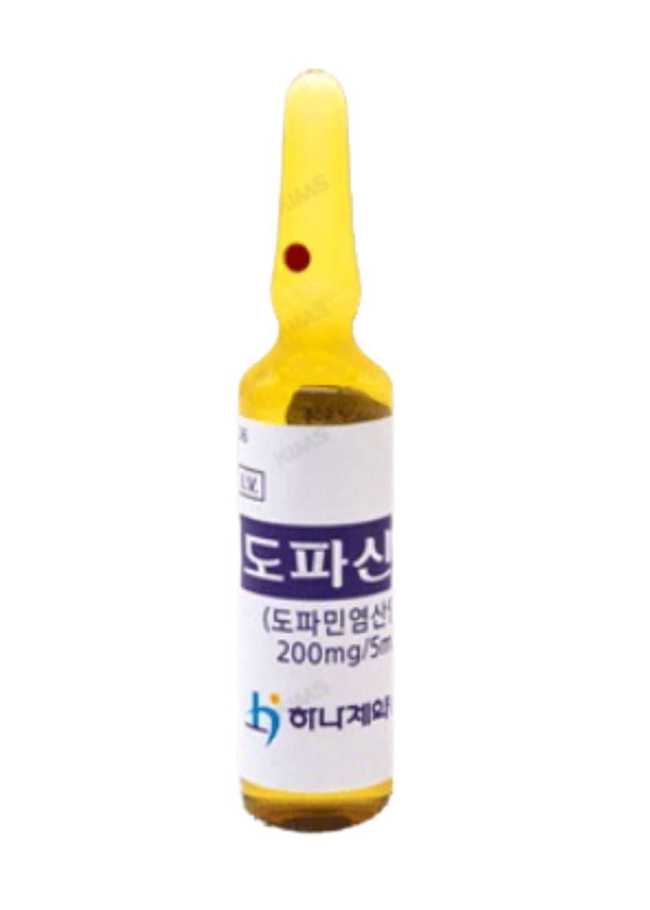
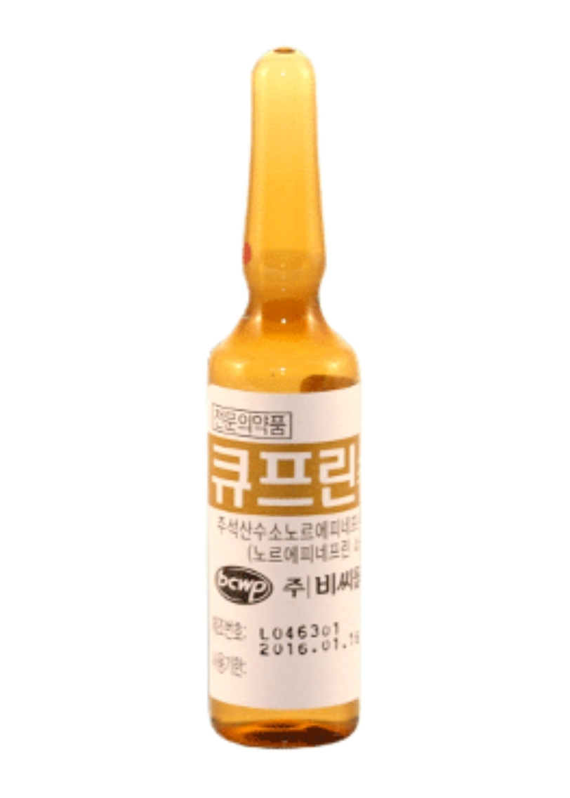
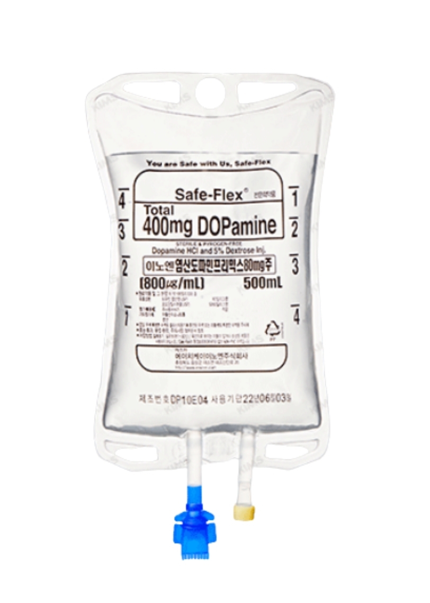
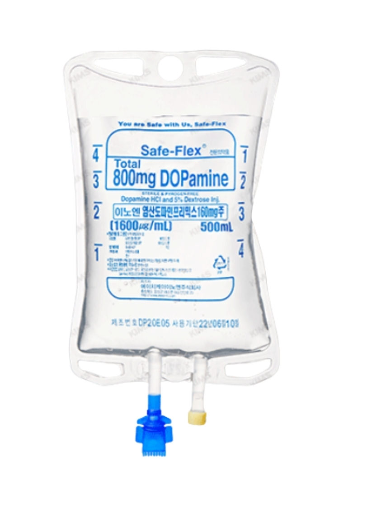

병동에서 자주 만나는 응급상황, 어떤 약물을 선택하시겠습니까?
이 학습은 응급약물을 단순 암기하는 것이 아니라, 실제 상황에서 어떤 약을 왜 선택해야 하는지 판단하는 훈련입니다.
상단의 📚 학습하기에서 약물별 기초를 확인하고, 🎮 퀴즈에서 상황 판단 훈련을 시작하세요.
응급약물은 이름을 외우는 것보다, 어떤 상황에서 왜 사용하는지 이해하는 것이 중요합니다.
병원코드: MEPI

주요 상황 cardiac arrest, CPR, pulseless VT/VF
기대 변화 심근 수축력 증가, 혈관수축, 관상동맥 관류압 증가
간호 포인트 CPR 중 투여 시점, route, flush 확인
주의 ROSC 후 빈맥, 혈압 상승, 부정맥 가능성
병원코드: MADEN

주요 상황 stable SVT
기대 변화 AV node 순간 차단 → 리듬 전환
간호 포인트 빠른 IV push + flush, ECG monitoring
주의 일시적 무수축처럼 보일 수 있음
병원코드: MCDR

주요 상황 VT/VF, recurrent ventricular arrhythmia
기대 변화 심실성 부정맥 억제, 리듬 안정화
간호 포인트 ECG, BP, 투여 속도 확인
주의 QT prolongation, hypotension, bradycardia
병원코드: MCAGLU

주요 상황 hyperkalemia + ECG 변화
기대 변화 심근세포막 안정화
핵심 칼륨 제거 약물이 아님
주의 ECG 변화 지속 관찰
병원코드: MBIVON

주요 상황 severe acidosis, hyperkalemia with acidosis
기대 변화 산증 완화, 칼륨 세포 내 이동 보조
간호 포인트 ABGA, Na, K monitoring
주의 무조건적 사용보다 산증 동반 여부 확인
병원코드: MDOPA

주요 상황 hypotension, symptomatic bradycardia
기대 변화 HR/BP 상승, 말초관류 개선
간호 포인트 BP, HR, infusion rate 확인
주의 tachycardia, arrhythmia
병원코드: MLEVO

주요 상황 septic shock, severe hypotension
기대 변화 강한 혈관수축 → MAP 상승
간호 포인트 MAP/BP, 말초순환, 정맥로 확인
주의 infiltration, peripheral ischemia
병원코드: M8DOPAM / M16DOPAM


주요 상황 severe hypotension, shock
기대 변화 BP 상승, perfusion 개선
간호 포인트 infusion pump 사용, 농도 확인
주의 800mg / 1600mg 용량 구분
응급약물은 약 이름보다 어떤 상황에서 왜 사용하는지 연결해서 기억하는 것이 중요합니다.
왜 사용?
관상동맥 관류압 증가, 심장 자극
핵심 포인트
CPR 중 투여 시점 + flush
왜 사용?
Refractory VF/VT 안정화
핵심 포인트
ECG/BP monitoring
왜 사용?
AV node 순간 차단 → 리듬 전환
핵심 포인트
빠른 IV push + flush
왜 사용?
심근세포막 안정화
헷갈림 주의
칼륨 제거 약물 아님
왜 사용?
산증 완화 + K 세포 내 이동 보조
헷갈림 주의
산증 동반 여부 확인
왜 사용?
강한 혈관수축 → MAP 유지
핵심 포인트
MAP/BP 지속 모니터링
왜 사용?
혈압 상승, perfusion 개선
핵심 포인트
농도/용량 구분
왜 사용?
HR/BP 상승
핵심 포인트
Tachycardia 관찰